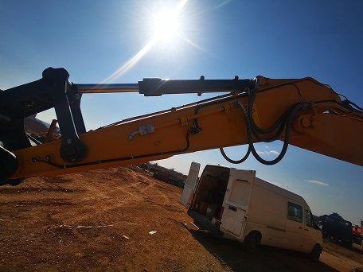
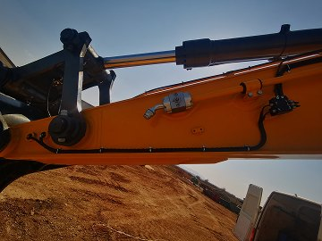
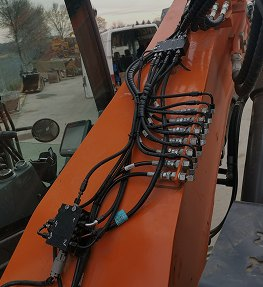
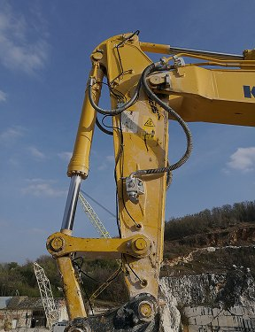
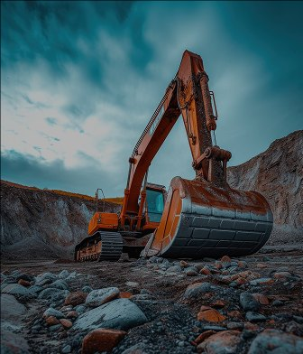
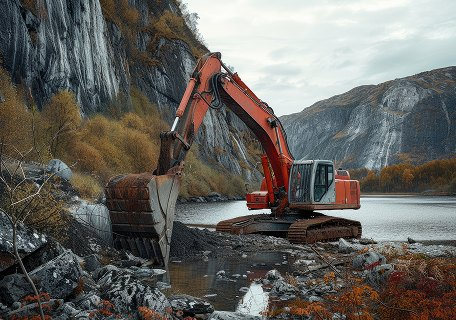

Bageri

R.014 · 2025Bager 22t — kompletna instalacija
Sistem sa 18 mazivih tačaka na strelu, kašiku i okretnicu. Pušten u rad u toku jednog dana.
Reference — galerija radova
Presek radova sa terena — ugradnje, prepravke i servisi na mehanizaciji različitih tipova. Filtrirajte po vrsti mašine.
12zapisa

R.014 · 2025Sistem sa 18 mazivih tačaka na strelu, kašiku i okretnicu. Pušten u rad u toku jednog dana.

R.013 · 2025Vodovi vođeni uz krak i pričvršćeni obujmicama, zaštićeni od zapinjanja u radu.

R.012 · 2025Centralni razvodnik sa pojedinačnim izlazom po tački, montiran na zaštićeno mesto.

R.011 · 2024Podmazivanje zglobova strele i priključka, sa odvojenim doziranjem po grani razvoda.

R.010 · 2024Servis pumpe i ponovno podešavanje doza posle sezone rada u prašini i kamenu.

R.009 · 2023Pojačana zaštita vodova zbog stalnog kontakta sa vodom i abrazivnim materijalom.
Sistem na osovine i nadgradnju, sa zaštićenim razvodom uz ram vozila.
Podmazivanje teleskopa i oslonaca, sa pojedinačnim doziranjem po tački.
Prepravka postojećeg sistema i zamena dotrajalih vodova nakon šest godina rada.
Podmazivanje sedla, osovina i mehanizma krova. Pumpa na ramu prikolice.
Sistem sa 14 tačaka na zglobove strele i centralni zglob mašine.
Sistem prilagođen radu u prašini, sa dodatnom zaštitom vodova.
Sistem se može prilagoditi gotovo svakoj mašini sa mazivim tačkama. Pozovite i opišite šta imate.